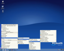

Operaèní systém Linux lze získat v tzv. distribucích - to je souhrn nejrùznìj¹ích aplikací slou¾ících k práci s poèítaèem. Ní¾e je uveden seznam nìkolika distribucí urèených ¹iroké veøejnosti.
Vyberte si distribuci, která se vám líbí.
 Ubuntu
UbuntuUbuntu je pomìrnì mladá distribuce vyvíjená komunitou za podpory firmy Canonical. Ubuntu je ov¹em postaveno na velmi spolehlivém základì ji¾ mnoho let vyvíjené distribuce Debian GNU/Linux. Zatímco Debian se sna¾í být distribucí znaènì univerzální, jasným cílem Ubuntu je pøiblí¾it Linux u¾ivatelùm pro pou¾ití na osobních poèítaèích jako tzv. desktopové prostøedí. Grafické prostøedí Ubuntu je zalo¾eno na Unity, nìkteøí lidé ale více preferují grafické prostøedí KDE. Proto vznikla varianta Ubuntu zvaná Kubuntu. Odlehèená verze s Xfce neboli Xubuntu je vhodná napø. pro star¹í poèítaèe. Ve vìt¹inì pøípadù je nejlep¹í sáhnout pøímo po Ubuntu. Instalaèní CD je i tzv. live CD (viz Chci vyzkou¹et) a a najdete ho pod odkazem "Stáhnout Ubuntu" ní¾e.
Debian je komunitní distribucí. To znamená, ¾e ho vyvíjejí dobrovolníci. U Debianu existuje záruka, ¾e v¾dy a za v¹ech okolností
zùstane tím, èím je - to je svobodným softwarem.
Canonical je komerèní spoleènost, která za¹ti»uje vývoj Ubuntu. V rámci této aktivity podporuje
i øadu dal¹ích projektù a poskytuje nástroje a podporu pro vývoj otevøeného software.
Èeské Ubuntu | Podpora | Dokumentace | Ubuntu - projekt | Poslat CD zdarma | Stáhnout Ubuntu
Èeské prostøedí i instalace
 Fedora
Fedora
 Fedora je distribuce, která vznikla jako nekomerèní odno¾ Red Hat Linuxu. Vyvíjí ho komunita vývojáøù za podpory
firmy Red Hat. Na základì Fedory pak Red Hat pøipravuje své komerèní distribuce Red Hat Enterprise Linux. Fedora je známa svou
pokrokovostí a zpravidla pøiná¹í v ka¾dé verzi nìkolik zásadních novinek. Distribuce je znaènì univerzální, se znatelným
zamìøením na pou¾ití na osobních poèítaèích.
Fedora je distribuce, která vznikla jako nekomerèní odno¾ Red Hat Linuxu. Vyvíjí ho komunita vývojáøù za podpory
firmy Red Hat. Na základì Fedory pak Red Hat pøipravuje své komerèní distribuce Red Hat Enterprise Linux. Fedora je známa svou
pokrokovostí a zpravidla pøiná¹í v ka¾dé verzi nìkolik zásadních novinek. Distribuce je znaènì univerzální, se znatelným
zamìøením na pou¾ití na osobních poèítaèích.
Red Hat je firma zabývající se vývojem a prodejem Red Hat Enterprise Linuxu. V minulosti významnì pomohla zdomácnìní Linuxu svou komunitní distribucí Red Hat Linux, jejím¾ následovníkem je Fedora.
Èeská Fedora | Podpora | Pøíruèka u¾ivatele | Fedora - projekt | Stáhnout Fedoru
Èeské prostøedí i instalace
 OpenSuSE
OpenSuSESuSE lze dnes získat ve dvou podobách. Jako OpenSuSE, co¾ je komunitou vyvíjená distribuce a jako SuSE Enterprise Linux (SLED). A» tak èi tak, na obou se podílí firma Novell v rámci jejích linuxových aktivit. SuSE je distribuce profilující se spí¹e jako komerèní, tedy distribuce, kterou mù¾ete pøedev¹ím koupit. Distribuce SuSE má nìkteré specifické nástroje, které se sna¾í distribuci co nejvíce zpøístupnit bì¾ným u¾ivatelùm osobních poèítaèù. Vzhledem k jejímu komerènímu charakteru je k dispozici i instalaèní podpora.
Novell je jednou z pøedních softwarových firem. V souèasnosti se zamìøuje právì na oblasti vyu¾ití Linuxu a nabízí celou øadu øe¹ení zalo¾ených na nìm, resp. na SuSE Linuxu.
OpenSuSE | SuSE portál | Objednat SuSE | Podpora | SuSE | Stáhnout SuSE
Èeské prostøedí i instalace
 PCLinuxOS je distribuce, která vznikla od¹tìpením od Mandrake linuxu (nyní Mandriva) v roce 2003 a vyvíjí jej skupina vývojáøù soustøedìná okolo Texstara (Bill Reynolds). Jedná se o distribuci, která je zamìøená na maximální jednoduchost. Obsahuje proprietální kodeky a instalaci dal¹ích programù obstarává Debianovský apt s jeho grafickou nadstavbou Synapticem spravující jeden centrální, pøednastavený repozitáø (k dispozici jsou samozøejmì i zálo¾ní zrdcadla). Instalaèní CD, které je zároveò Live CD, obsahuje ve zkomprimované podobì cca.2 GB dat, tak¾e po instalaci dostanete plnì funkèní systém s bohatým mno¾stvím software, který je ihned pøipraven k práci, pou¾ívání internetu, pøehrávání filmù, mp3.
Èeský PCLinuxOS | PCLinuxOS | Podpora
Pokroèilej¹ími u¾ivateli jsou ti, kdo zvládají administraci Linuxu z pøíkazové øádky a jsou obeznámeni s architekturou a strukturou Linuxu.
 Gentoo
GentooGentoo je distribuce pro pokroèilé u¾ivatele. Umo¾òuje u¾ivateli sestavovat si celou distribuci samostatnì a zcela na míru svému poèítaèi. Gentoo je velmi dobøe dokumentována a poskytuje pokroèilej¹ím u¾ivatelùm mo¾nost dal¹ího rozvoje jejich znalostí o Linuxu. Pøesto, ¾e si tato distribuce zakládá na svém pokroèilém pøístupu, dá se i tak snadno pou¾ít na osobním poèítaèi.
Gentoo je trochu specifická a pomìrnì mladá komunitní distribuce. Její vývojáøi ji zalo¾ili jako linuxovou vìtev, která se svými principy pøibli¾uje k jiným unixovým platformám.
Slackware je distribuce s dnes ji¾ trochu spartánským pøístupem. Pøesto, a nebo právì proto, si díky své jednoduchosti zachovává mno¾ství pøíznivcù. Její pou¾ití na bì¾ném osobním poèítaèi ov¹em ji¾ vy¾aduje znalost ovládání Linuxu na úrovni shellu.
Slackware je distribucí komunitní, ov¹em vytváøenou pod vedením silné osobnosti Patricka Volkerdinga, který je jejím zakladatelem.
Slackware - projekt | Èeský Slackware | Sta¾ení Slackware
 Debian GNU/Linux
Debian GNU/LinuxDebian je jedna z velmi dlouho vyvíjených distribucí, zcela vycházejících z my¹lenky GNU resp. open source. Kompletní distribuce Debian je velmi rozsáhlý a komplexní celek s univerzálním pou¾itím, bez dal¹ích znalostí je ale nevhodný pro úplné zaèáteèníky - právì kvùli své rozsáhlosti. Projekt Debian vydává tøi vìtve své distribuce - stable (stabilní), testing (testovací), unstable (nestabilní). Nestabilní obsahuje zcela nové vìci a její konzistence není zaruèena, testovací vìtev je urèena pro programy, které pro¹ly základním testováním a jsou kandidáty na zaøazení do stabilní vìtve. Stabilní vìtev pak obsahuje jen stabilnìj¹í a odladìné aplikace (mnohdy pak ale neobsahuje nejvìt¹í novinky).
Debian GNU/Linux | Èeský Debian GNU/Linux | Sta¾ení Debianu
 Mageia
MageiaMageia, døíve známý jako Madriva/Mandrakelinux. Je vyvíjen komunitou vývojáøù, vznikla odstepenim od updatajiciho Mandriva Linuxu.
Èeský Mageia Linux | Podpora | Dokumentace | Mageia | Stáhnout Mageiu
Èeské prostøedí i instalace
Mandriva Linux, døíve známý jako Mandrakelinux. Je vyvíjen komunitou vývojáøù spoleènì s vývojáøi firmy Mandriva (døíve Mandrakesoft). Mandriva Linux je k dostání v nìkolik verzích - od placené krabicové verze a¾ po verzi zcela zdarma. Rozdíl je tvoøen pøedev¹ím rozsahem dokumentace, doplòkù a komerèních aplikací. Mandriva Linux je distribuce silnì specializovaná pro pou¾ití na osobním poèítaèi a získala si oblibu u velkého mno¾ství u¾ivatelù, kteøí s Linuxem zaèínají. Mandrakesoft a Connectiva po slouèení vytvoøily, i kvùli dlouhodobì trvajícím sporùm o ochrannou známku Mandrake, spoleènost Mandriva a spoleènými silami pokraèují ve vývoji distribuce Mandriva Linux.
Èeský Mandriva Linux | Objednat Mandriva Linux | Podpora | Dokumentace | Mandriva | Stáhnout Mandriva Linux
Èeské prostøedí i instalace
U ka¾dé distribuce na této stránce je odkaz na stránku popisující, jak a kde mù¾ete pøíslu¹nou distribuci stáhnout. Nìkteré stránky jsou v¹ak v angliètinì a mohou obsahovat termíny, které nemusí být zcela zøejmé.
Pøi stahování distribuce je nejlep¹í sáhnout po verzi pokud mo¾no nejnovìj¹í. Z nabízených adresáøù je tedy záhodno vybrat verzi oznaèenou nejvy¹¹ím èíslem. Dal¹í komplikace mohou nastat u volby vhodné architektury - to znamená specifikace typu va¹eho poèítaèe. (Linux je dostupný pro mnoho rùzných architektur - napø. Intel, AMD, PowerPC (Mac) a dal¹í.) Pokud vlastníte poèítaè postavený na procesoru firmy Intel nebo AMD, neudìláte chybu, pokud zvolíte architekturu i386, i486, i586 (od Pentia I vý¹) èi i686, souhrnnì se tato architektura nìkdy oznaèuje x86. Pokud máte novìj¹í 64bitový procesor AMD, bylo by ¹koda nezvolit pøíslu¹nou 64bitovou architekturu - tedy AMD64 nebo x86_64.
Z nabízených adresáøù a souborù je pak potøeba stáhnout soubory s pøíponou .iso, co¾ jsou CD pøípadnì DVD obrazy.
.iso soubory jsou obrazy instalaèních CD resp. DVD a je potøeba je správným zpùsobem pøenést, vypálit na CD. Tyto soubory se nevypalují jako bì¾ný soubor, ale ve va¹em vypalovacím programu je potøeba zvolit vypalování obrazu (image) CD. Pøíslu¹né volby jsou závislé na va¹em vypalovacím softwaru.
Linuxových distribucí existuje velké mno¾ství a zde uvedené jsou vybrány pouze proto, ¾e jsou vhodné pro zaèínající u¾ivatele a pro pou¾ití na osobním poèítaèi nebo notebooku. Existuje mnoho speciálních, úèelových distribucí, urèených pro servery, pro malá a vestavìná zaøízení, pro PDA, pou¾ívá se v bezdrátových pøípojných bodech (wifi) atd. Za tímto úèelem vzniká mno¾ství rùzných variant, které ov¹em nejsou v¾dy vhodné na osobní poèítaè.
Mnoho dal¹ích distribucí naleznete na stránkách linuxsoft a distrowatch.
{kind=link}
{kind=link}
{kind=link}